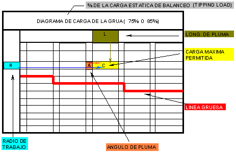
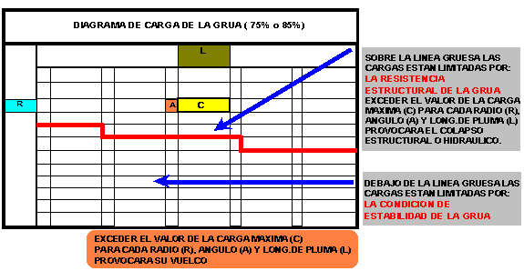
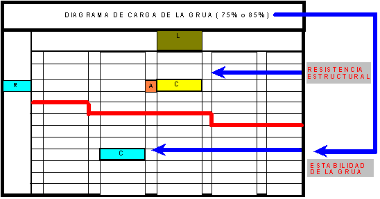
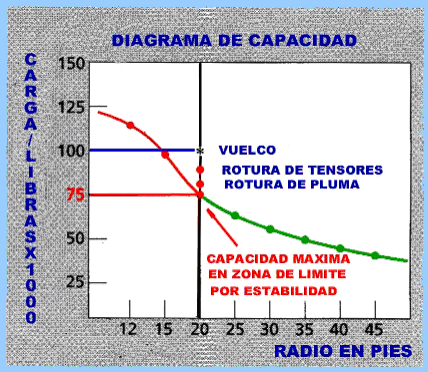

| 1. DIAGRAMA DE CARGA I |
|  |
| 2. DIAGRAMA DE CARGA II |
|  |
| 3. DIAGRAMA DE CARGA III |
|  |
|
LAS
CARGAS EN TABLA (EN ZONA DE ESTABILIDAD)
NO EXCEDEN EL 75% SOBRE NEUMATICOS (o 85% SOBRE ESTABILIZADORES)
DE LA CARGA DE VUELCO DETERMINADA SEGÚN ENSAYO EN NORMA
SAE J765A LAS CARGAS EN TABLA POR ARRIBA DE LA LINEA
GRUESA SON MAXIMAS Y DETERMINADAS POR LA RESISTENCIA ESTRUCTURAL
O HIDRAULICA.
|
|  |
|
JAMAS DEBE
TOMARSE LA ESTABILIDAD DE LA GRUA COMO LIMITE DE CAPACIDAD , YA
QUE ENTRE LA CARGA MAXIMA (75000) LBS
Y LA CARGA DE VUELCO (100000 LBS)
EXISTEN LIMITES ESTRUCTURALES QUE NO
DEBEN SOBREPASARSE. POR EJEMPLO: |
| POR LO TANTO LAS CARGAS QUE FIGURAN EN LA TABLA SON MAXIMAS ABSOLUTAS Y NO DEBEN SUPERARSE POR NINGUNA RAZON . |
| 4. TABLA DE CARGA (Definiciones) |
| AREA DE TRABAJO (AT) : AREA MEDIDA EN UN ARCO CIRCULAR SOBRE EL EJE DE ROTACION DE LA TORNAMESA COMO SE MUESTRA EN EL AREA DEL DIAGRAMA DE OPERACIÓN. |
| ESTABILIZADORES TOTALMENTE EXTENDIDOS (E.E) :TODAS LAS VIGAS DE LO ESTABILIZADORES TOTALMENTE EXTENDIDAS HASTA LA MAXIMA DISTANCIA Y CON TODAS LAS ZAPATAS ABAJO Y FIJADAS. |
| ESTABILIZADORES EN POSICION MEDIA (E.M): TODAS LAS VIGAS DE LOS ESTABILIZADORES TOTALMENTE EXTENDIDAS HASTA LOS TOPES DE POSICION MEDIA Y CON TODAS LAS ZAPATAS ABAJO Y FIJADAS. |
|
|
|
|
|